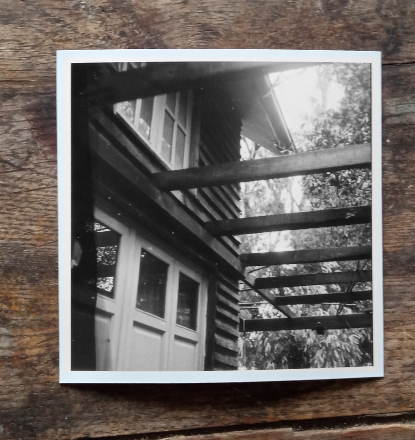
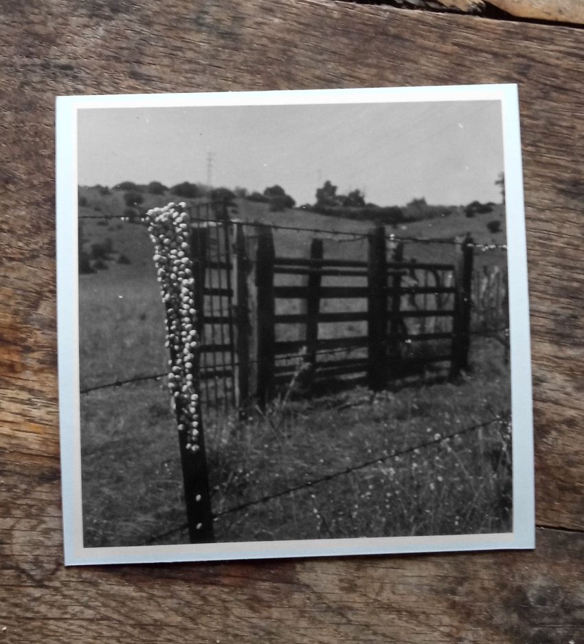
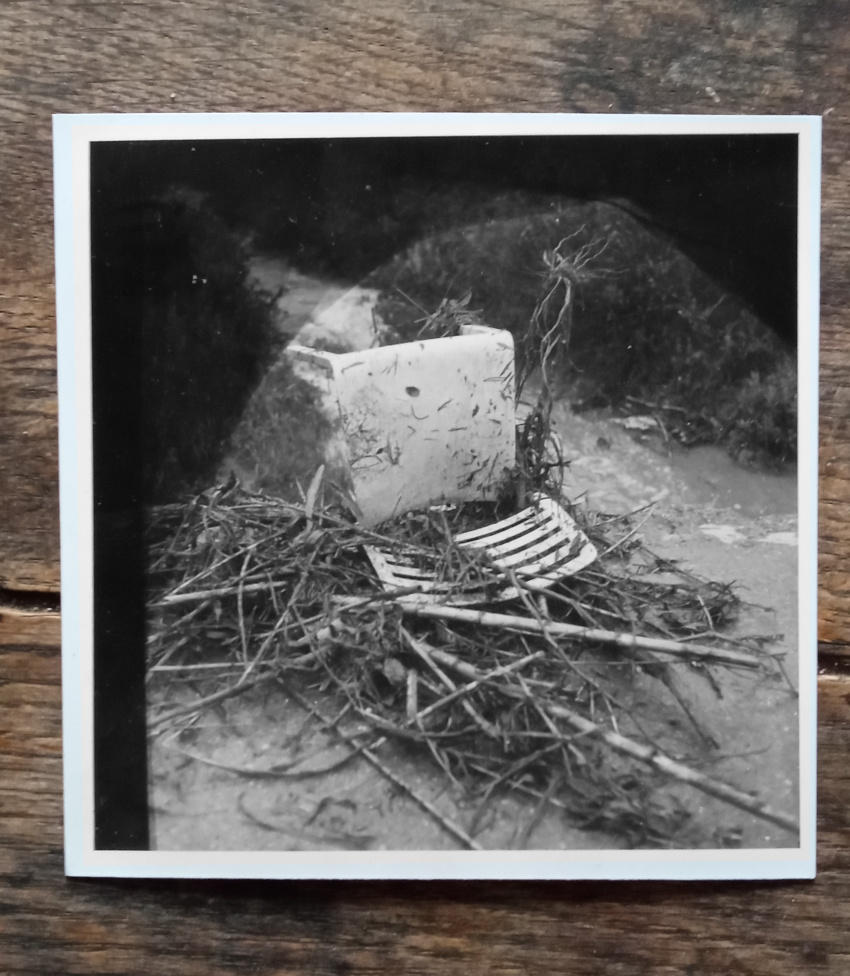
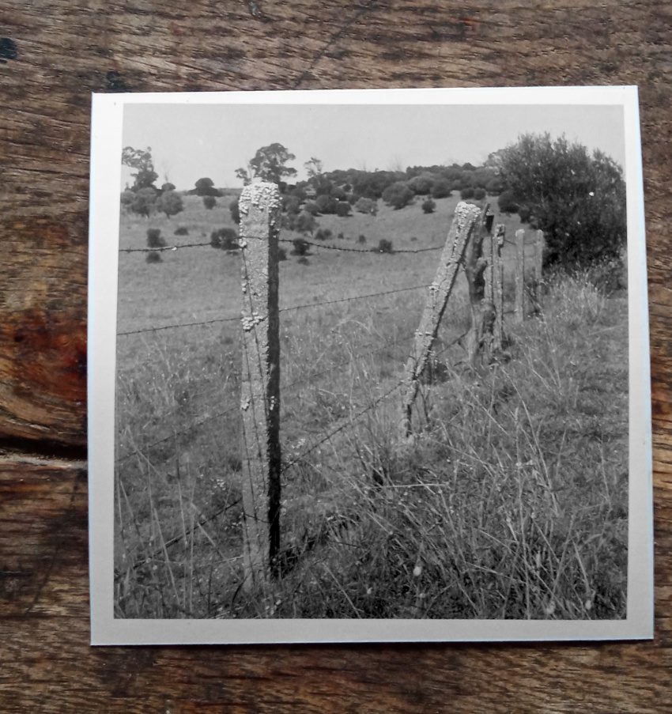

His name on the screen; the phone on silent mode. It occurs quite often when the phone is on silent: he calls, and I happen to look at the screen and see his name. Curiously, his profile picture is a computer-generated image of two beings embracing, a blue icy male figure and a fiery woman figure. A passion contrasting the word 'Dad' above the image. I click to answer and say "hello dad", his voice more wakeful than I expected, "Hi, listen, I don't know where I am exactly. It is dark here, must be underground... I hear water running. I know it is a hospital, must be the cellar". "is there no one to ask?" I asked, "no" he answered.

Exhaustion. Trying to speak costs a life, and the sounds that comes out make no sense. He wonders whether he will need to learn to speak all over again, but thoughts come and go, and nothing persists in his brain. The sound of the water lapping washes over this last thought, followed by a startling worry that the water might get him wet soon, or does he feel wet already? but that thought desolves and leaves him with deep throathy sound that turns into a yawn.
There are moments in which I am gasping for air. Looking desperately for the way out, but this is not a drill, I will not be bailed out. I have to retrace my steps, and find new holds for the escape. My dad. In a lucid moment he has requests. There is weariness in the lucid moments, and there is worry when he is less than lucid. When his face sheds the effort of living, and shows only the patina of have-lived. In a lucid moment, on the other hand: the man comes late to the game, the other players are somewhat exhausted, but he wants to play. He asks for water, no actually go get him coffee, he knows he didn't drink the last one you got him, but this moment is a new moment, and do you mind straightening him up? Do you know where the phone is? He is certain they are late with dinner, and do you know how he couldn't sleep in the night? "He makes up for it in the day", I think to myself.

I went up and down this lift five times this morning. This time one of the medics is going down with me, phone in hand, out of his uniform, eager to forget about this ward till his next shift. It is a long corridor out of the building and to the next one.
In the time I am here I found the three reasonable options for coffee, but then settled on the smaller setup, usually manned by a young boy and a young girl that seem to pass an ok time serving an infinite flow of coffee drinkers and pastry eaters. I also finally settled on the small coffee, after meddling with medium and large. The breaking point was at the weekend, the cafes in the hospital are closed so I ventured further for coffee to the neighbouring shopping centre. I joined a long queue and mistakingly ordered a large coffee. I thought that this is too far to walk again, I won’t come back, and I won’t have another coffee today. Unfortunately, this coffee was particularly bad, and there was a lot of it. I settled on small since.

The breathing changed. I lifted my eyes from the book I was reading, and saw that his were open. He looked straight ahead, blinked, slight movements of the eyes. Wakefulness. - Hi dad, you are awake. - Hey... so you came. - Yes dad, I've been sitting here for a week now. I was helping you feed, and moving you around in bed, do you not remember? - hmmm.. no. He appeared to scan his brain with blinks and breaths, and then said: - I understand it was an amputation, right? - Yes. - And what do the doctors say? - They say it went well, and it is healing. - Good, I'm really tired I will get back to sleep now. I wanted to tell him how concerend we were with his long sleep, and delusion, but the moment was lost and his breath turned into light snores. There was no guarantee that the next time he speaks he will make sense, but that little conversation filled me with hope. I didn't realise the level of stress I was in until I was allowed to release. I rose and left for a walk.

What you didn't ask in time, you may never get to ask. You will not know everything there is to know. Even though we spent so many minutes in silence, not feeling the need to speak, when the time elapsed, some things will have been left unresolved. With all the repetition we felt we are allowed to indulge in, something of the core was left unknown, and the pain from the feeling of missed opportunities, is the new story now.